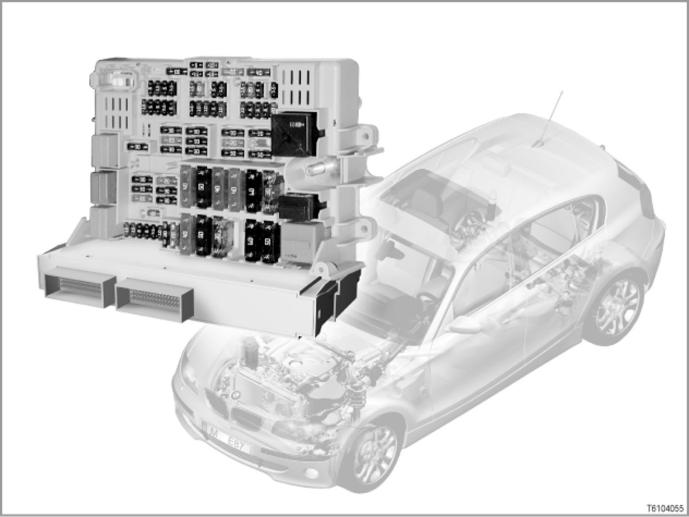

61 05 04 (095) Junction Box
61 05 04 (095)
Junction box
E70, E71, E81, E82, E87, E88, E90, E91, E92, E93

Introduction
On the BMW 1-Series, 3-Series and on the BMW X5, the junction box assumes a central role in the vehicle. In the junction box, the distribution box and the junction box electronics form a single unit.
The junction box electronics is the central gateway in the vehicle.
> E70, E71:
> E81, E82, E87, E88:
> E90, E91, E92, E93:
Brief description of components
The junction box consists of the distribution box and the junction box electronics.
- JBE: Junction box electronics
The junction box electronics unit combines numerous functions in a single control unit. The junction box electronics unit is connected via 4 plug connections.
A 54-pin connector connects the instrument panel. Two further connectors are for the connection on the main wiring harness. These connectors are 54-pin and 47-pin. A 23-pin internal connection directly connects the junction box electronics to the power distributor.
- Electrical distributors
The fuses and various plug-in relays are located in the junction box distribution box. The boards in the distribution box are connected to various relays, depending on the equipment specification. There is an opening in the lower section of the junction box. The junction box electronics unit is connected with the distribution box through this opening.
[more...]
Note: For current details about the pin assignment and fuse assignment of the junction box electronics and the power distributor, please refer to the BMW diagnosis system
Different versions of the power distributor are fitted, depending on the model series and Model Year measures. For example, the complete fuse assignment may change as part of Model Year measures.
- 03/2007 Model Year measure (not E70, E71):
primarily changes to pin assignment
- 09/2007 Model Year measure (not E70, E71):
primarily changes to fuse assignment
Depending on the vehicle equipment, various relays are mounted on the boards in the power distributor.
System functions
Numerous functions are provided in the junction box electronics (JBE). For example, the junction box electronics unit processes multiple signals, which it makes available to other bus subscribers on the electrical system. It also performs control tasks.
Depending on the model series and equipment, the following functions can be controlled or signals detected by the junction box electronics:
- Gateway
The junction box electronics unit enables a number of bus systems to communicate with one another. The junction box electronics unit provides the gateway function for the following bus systems:
- Body CAN
- Powertrain CAN
- Diagnosis wire or D-CAN (diagnosis-on CAN)
The chassis CAN (F-CAN) is connected to the junction box, but is merely looped through.
After waking, the gateway is ready to send messages to the corresponding bus systems within 20 ms.
- Power windows
The footwell module (FRM) and the junction box electronics (JBE) control and monitor the power windows.
The junction box electronics detects the following signals and makes them available to other bus subscribers:
- Power window switch, front passenger door
- Power window switch, rear door on the front-passenger side
- Power window switch, rear door on the driver's side
- Hall sensor, rear door on the driver's side
- Hall sensor, rear door on the front-passenger side
The junction box electronics unit controls the following actuators:
- Power window drive, rear door on the front-passenger side
- Power window drive, rear door on the driver's side
- Wiper/washer system
The junction box electronics unit detects the following signals and makes them available to other bus subscribers:
- Reset contact, front
- Reset contact, rear
The junction box electronics unit controls the following actuators:
- Wiper relay for wiper stage 1 and 2
- Wiper relay for rear window
- Windscreen washer pump relay for headlamp wipe/wash unit
- Central locking system
The junction box electronics (JBE) is the executing control unit for the central locking system. The junction box electronics assume the task of actuating all central-locking system drives. The following control combinations are possible:
- Selective unlocking
- Deadlock release
- Locking
- Unlocking and deadlock release
- Deadlocking
The boot lid lock is activated via its own output stage.
[for more information, please refer to SI Technology 61 01 04 072]
- Climate control
The junction box electronics (JBE) detect the following signals and makes them available to other bus subscribers:
- Sensor for automatic air recirculation mode
- Refrigerant pressure sensor
- Rear stratification control
The junction box electronics unit controls the following actuators:
- Additional coolant pump
- Control valve for air-conditioning system or magnetic coupling
- Water valve (depends on engine equipment)
[For more information, please refer to SI Technology 64 01 04 090] 64 01 04 (090) Integrated Heating Control and Air-Conditioning System
- Seat heating
A seat heating module or the more advanced driver's seat module can be fitted for the seat heating. A seat module is always fitted with seat memory.
The junction box electronics unit (JBE) sends a request to check whether a seat module has been fitted. If the junction box electronics unit does not receive a confirmation, the JBE will take over control of the seat heating. The junction box electronics generate a pulse-width-modulated signal. This signal is used to control the seat heating module.
If a seat module has been fitted, the seat heating is controlled directly by it.
- Mirror heating and heated washer jets
The junction box electronics (JBE) control the following actuators:
- Basic variant of mirror heating
- Heated washer jets
If a mirror memory has been fitted, the LIN bus takes over control of the footwell module (FRM).
- Bistable relay
The bistable relay is used to shut down terminal 30g-f if there is a closed-circuit current fault. Similar to the micro power module (MPM), e.g. for E60 before 09/2005.
The relay is built in for certain options only (e.g. CCC, M-ASK, TCU, ULF). If a bistable relay is fitted, an intelligent battery sensor will also be fitted.
- Functions for instrument cluster
The junction box electronics unit detects the following signals for the instrument cluster:
- Fuel level sensor 1
- Fuel level sensor 2
- Coolant level
- Parking brake warning switch
- Washer fluid level
- Lock for second row of seats
> E70
The junction box electronics (JBE) monitor the locking of the second row of seats.
A total of 5 microswitches are fitted in the second row of seats. The microswitches are used to verify that the second row of seats is correctly locked. The microswitches are wired in parallel directly with the junction box electronics.
When the second row of seats is correctly locked, a signal is sent to the junction box electronics. If the signal is not received, the second row of seats is not correctly locked. The junction box electronics sends a message on the body CAN. The instrument cluster emits a Check-Control message.
- DTC button
The junction box electronics unit detects signals from the DTC button.
- Parking brake warning switch
The junction box electronics unit detects signals from the parking brake warning switch.
- Roller sunblind for rear window
The junction box electronics actuates the drive for the roller sunblind.
- Servotronic valve
On vehicles with Servotronic, the junction box electronics actuates the Servotronic valve (only on vehicles without option 217 "Active Steering").
Cable connector
As well as its electronic function, the junction box electronics unit (JBE) also has a connector function. Many of the wires from the 4 connectors that are connected to the junction box electronics are linked via the junction box electronics. The connections optimise the wiring harness. Here, the junction box electronics work as a node.
Junction box electronics relays
The junction box electronics unit (JBE) has internal and external relays. The excitation coils on all relays are permanently supplied with a positive cable. The positive power supply for the external relays is provided via the load circuit which is to be switched through. The positive power supply for the internal relay is provided via the fused junction box electronics supply wire. All relays are controlled via the negative lead. All internal relays and the relay for wiper stage 1 and wiper stage 2 are located downstream of the fuse on the current circuit. All other external relays on the junction box electronics are located upstream of the fuse on the current circuit.
The internal relays are:
- Relay for power window drive, rear
- Relay for central-locking drive (except tailgate)
The external relays are:
- Relay for drive, rear window wiper
- Relay for drives, wiper stage 1 and wiper stage 2
- Relay for headlight washer system
- Relay for heated rear window
- Bistable relay (deactivation of closed-circuit current fault)
Notes for service staff
Service staff should note the following points:
- General information: ---
- Diagnosis: ---
- Encoding/programming: ---
Subject to change.